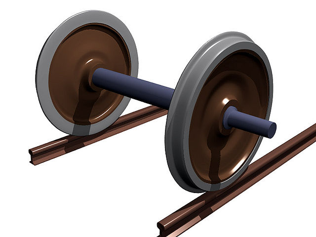

"Un train n'est pas qu'une machine, c'est une œuvre d'art cinétique, où chaque mouvement est le fruit d'une harmonie mécanique parfaite."
Découvrez les Pièces Maîtresses
Chaque composant raconte une histoire de puissance, d'ingéniosité et de voyage.

Bielle d'Accouplement
Le lien vital entre les roues motrices, harmonisant la puissance.

La Crapaudine
Le coussinet robuste qui porte le poids et permet la rotation.
L'Essieu
La colonne vertébrale roulante, supportant et transmettant la force.
Manivelle de Maneton
Le levier qui transforme la poussée en rotation des roues.
Timonerie de Frein
Le système complexe qui assure la sécurité et l'arrêt du géant.
Citation
Les Rails, Veines du Monde
Rubans d'acier, veines du monde endormi,
Ils guident le voyageur, l'âme et l'esprit.
Sous le soleil ardent, sous la lune d'argent,
Les rails racontent l'histoire, éternellement.